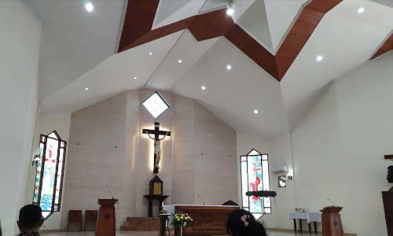

Setiap tahun, SMA Yos Sudarso Karawang mengadakan karyawisata yang memberikan pengalaman belajar di luar kelas. Siswa-siswi diajak mengunjungi tempat-tempat bersejarah, pusat sains, dan destinasi lainnya yang mendukung pembelajaran dan memperkaya wawasan.
Karyawisata ini tidak hanya menambah pengetahuan tetapi juga mempererat kebersamaan antar siswa dan guru. Melalui kegiatan ini, siswa belajar nilai-nilai kerja sama, tanggung jawab, dan kemandirian.